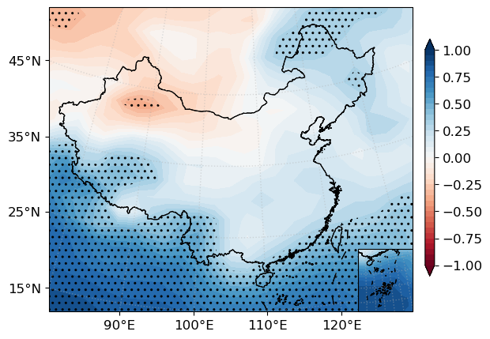
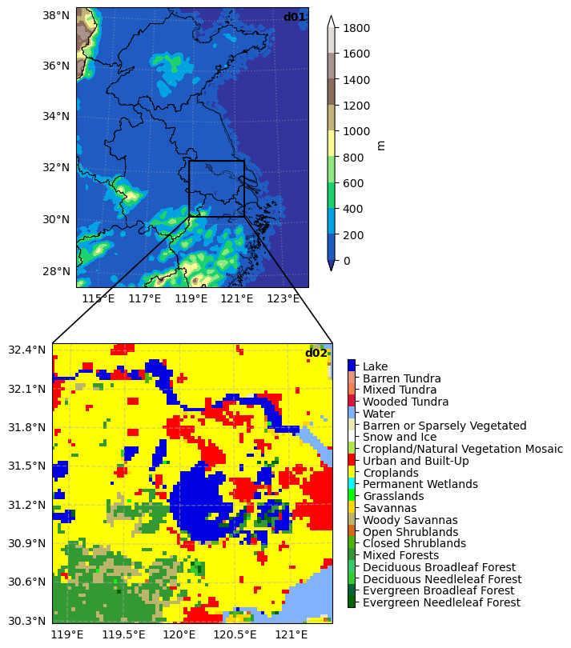

测试MetroDraw文件夹下的Draw.py
1. 测试Draw_map类
import numpy as np
import pandas as pd
import xarray as xr
import cartopy.crs as ccrs
import matplotlib.pyplot as plt
from scipy.stats import pearsonr
from MeteoPy import Draw_map
from MeteoPy import adjust_sub_axes
# # 读取绘图数据
# # 获取近30年海平面气压1991-2020
test_data1_ = xr.open_dataarray('../TestData/slp.mon.mean.nc')
test_data1 = test_data1_.loc['1991-01-01':'2020-12-01'] # 索引时间
lon, lat = test_data1['lon'], test_data1['lat'] # 获取经纬度
test_data1 = np.array(test_data1).reshape(test_data1.shape[0] // 12, 12,
test_data1.shape[1], test_data1.shape[2]) # 重铸维度，方便月平均
test_data1 = np.mean(test_data1, axis=1) # 月平均
# # 获取近30年Nino3.4指数1990-2020
test_data2 = pd.read_csv('../TestData/nina34.txt', sep='\s+', header=None, skiprows=1, skipfooter=3,
names=['年'] + [str(i) + '月' for i in range(1, 13)], index_col=['年'],
engine='python')
test_data2 = test_data2.loc[1991:2020]
test_data2 = test_data2.mean(axis=1) # 月平均
# # slp与Nino3.4指数做相关
r, p = np.zeros((test_data1.shape[1], test_data1.shape[2])), np.zeros((test_data1.shape[1], test_data1.shape[2]))
for i in range(test_data1.shape[1]):
for j in range(test_data1.shape[2]):
r[i, j], p[i, j] = pearsonr(test_data2, test_data1[:, i, j])
1.1 测试填色图、打点图，以及南海小地图
map_proj = ccrs.LambertConformal(
central_longitude=105, standard_parallels=(25, 47)
)
# # 创建空白画布
fig = plt.figure(figsize=(8, 5))
ax = fig.add_subplot(1, 1, 1, projection=map_proj)
# # 创建绘图实例
draw = Draw_map()
draw.comunity_maps(ax, extent=[80, 130, 15, 55], xticks=np.arange(80, 130.1, 10),
yticks=np.arange(5, 45.1, 10), cnmap={'country':'中华人民共和国'})
# 相关系数r填色图
draw.draw_contour_f(fig, ax, lon, lat, r, type={'contourf':{'levels':np.arange(-1, 1.01, 0.05), 'cmap':'RdBu',
'cbar':[[0.82, 0.2, 0.015, 0.6], 'vertical', None]},
'南海':{'shrink':0.15}})
# p值打点图
draw.draw_contour_f(fig, ax, lon, lat, p, type={'contourf':{'levels':[0, 0.1, 1], 'hatches':['..', None]}})

2. 测试WPS_domain类
import f90nml
from MeteoPy import WPS_domain
# # 查看namelist.wps内容
f90nml.read('../TestData/namelist.wps')
output:
Namelist([('share',
Namelist([('wrf_core', 'ARW'),
('max_dom', 2),
('start_date',
['2017-07-20_00:00:00', '2017-07-20_00:00:00']),
('end_date',
['2017-07-25_00:00:00', '2017-07-25_00:00:00']),
('interval_seconds', 21600),
('io_form_geogrid', 2)])),
('geogrid',
Namelist([('parent_id', [1, 1, 2]),
('parent_grid_ratio', [1, 3, 3]),
('i_parent_start', [1, 55, 20]),
('j_parent_start', [1, 35, 20]),
('e_we', [113, 82, 61]),
('e_sn', [136, 82, 61]),
('geog_data_res', ['modis_lakes', 'modis_lakes']),
('dx', 9000),
('dy', 9000),
('map_proj', 'lambert'),
('ref_lat', 33.0),
('ref_lon', 119.0),
('truelat1', 30.0),
('truelat2', 60.0),
('stand_lon', 120.0),
('geog_data_path', '/pubdata1/WRF-DATA/geog/')])),
('ungrib', Namelist([('out_format', 'WPS'), ('prefix', 'FILE')])),
('metgrid',
Namelist([('fg_name', 'FILE'), ('io_form_metgrid', 2)]))])
2.1 测试
import numpy as np
# # 测试
WPS_domain('../TestData/namelist.wps', xticks=np.arange(115, 124, 2), yticks=np.arange(28, 39, 2))

3. 测试Landuse_geo类
from MeteoPy import Landuse_geo
# # 测试
# 创建实例case1
case1 = Landuse_geo('../TestData/namelist.wps')
case1.d01_hgt('../TestData/geo_em.d01.nc')
case1.Landuse('../TestData/geo_em.d02.nc')
